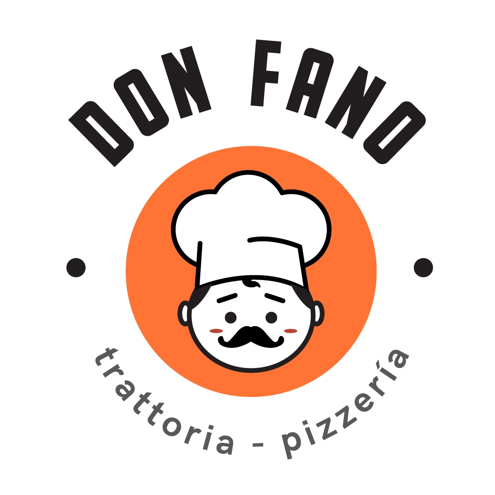

<div class="sidebar">
  <div>
    <div class="sidebar-logo">
      
      <div class="logo-text">
        <h2>Don Fano</h2>
        <span>Trattoria & Pizza</span>
      </div>
    </div>

    <nav class="sidebar-menu">
      <a href="admin-dashboard.html" class="sidebar-link">
        <i class="fas fa-chart-line"></i>
        <span>Dashboard</span>
      </a>
      <a href="admin-trabajadores.html" class="sidebar-link">
        <i class="fas fa-users"></i>
        <span>Trabajadores</span>
      </a>
      <a href="admin-turnos.html" class="sidebar-link">
        <i class="fas fa-calendar-alt"></i>
        <span>Turnos</span>
      </a>
      <a href="admin-reportes.html" class="sidebar-link">
        <i class="fas fa-file-alt"></i>
        <span>Reportes</span>
      </a>
      <a href="../panel-qr.html" class="sidebar-link">
        <i class="fas fa-qrcode"></i>
        <span>Panel QR</span>
      </a>
    </nav>
  </div>

  <div class="sidebar-footer">
    <button id="btnLogout" class="logout-btn">
      <i class="fas fa-sign-out-alt"></i>
      <span>Cerrar sesión</span>
    </button>
    <script src="/scripts/logout.js"></script>
  </div>
</div>
